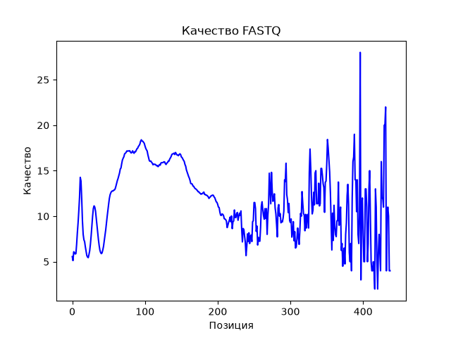

Примеры результатов
Ниже приведены краткие фрагменты демонстрационного вывода для файлов sample.sam и sample.vcf, размещённых в репозитории. Количественные значения соответствуют записям этих файлов и логике демонстрационной программы.
SAM: выравнивания
При выборе sam и файла sample.sam программа считывает две записи выравнивания. В сводке по хромосомам отображается по одной записи для chr1 и chr2.
PG ID: demo-aligner
RG ID: sample1
SQ ID: chr1 chr2
Кол-во выравниваний: 2
Статистика по хромосомам:
chrom alignments
0 chr1 1
1 chr2 1
Выравнивания в регионе chr1:100-500:
Кол-во выравниваний в chr1:100-500 = 1
VCF: генетические варианты
При выборе vcf и файла sample.vcf программа получает пять вариантов. При группировке с размером окна 100 000 позиций все четыре варианта chr1 попадают в первое окно этой хромосомы, а вариант chr2 — в первое окно chr2.
fileformat: VCFv4.2
source: myCaller
Колонки: CHROM POS ID REF ALT QUAL FILTER INFO FORMAT SAMPLE1
Кол-во вариантов: 5
Статистика по регионам (окно 100000):
chrom start end count
0 chr1 1 100000 4
1 chr2 1 100000 1
Вариантов в 1:9000001-9100000 = 0
Последняя строка показывает результат запроса именно для координат 1:9000001–9100000. В тестовом файле sample.vcf записи находятся в других позициях, поэтому для указанного интервала совпадений нет.
График качества FASTQ
Для FASTQ также строится график оценок качества по позициям нуклеотидов в прочтениях. По оси X отложена позиция в последовательности, по оси Y — оценка качества, отображённая в исходном графике.

